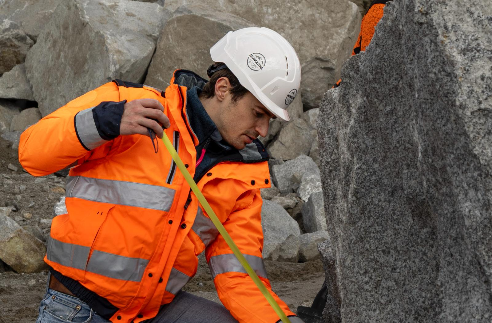

01
Sélection des rochers en carrière
Tout commence en carrière par le choix minutieux de nos rochers, qui sont en grande majorité des rebuts non exploités. Lors de cette sélection, nous recherchons le compromis idéal entre les dimensions, le potentiel d'escalade et l'esthétique de la pierre.
Afin de limiter notre empreinte carbone et de conserver une véritable cohérence territoriale, nous veillons à sourcer nos rochers au plus proche de nos clients. Nous sommes d'ailleurs capables de travailler avec différents types de carrières, à la seule condition que la roche soit compatible avec la grimpe (non friable).
